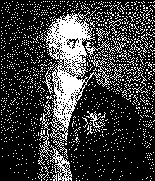

| годы жизни | 1749–1827 |
| страна | Франция · Нормандия |
| область | математика · астрономия · физика · статистика |
| главное | «Небесная механика» · «Теория вероятностей» · демон Лапласа · преобразование Лапласа |
| характер | систематизатор · выживал при любой власти · «Наполеон математики» |
Математик который систематизировал всё.
пережил Ancien Régime, Революцию, Наполеона и Реставрацию — и при каждой власти был в почёте.
Лаплас пережил Ancien Régime, Революцию, Наполеона и Реставрацию. При каждой власти — в почёте. Это либо гибкость либо гениальность. Скорее всего — и то и другое.
«Небесная механика» (1799–1825) — пять томов1. Лаплас взял уравнения Ньютона и решил задачу устойчивости Солнечной системы. Наполеон спросил почему в книге нет Бога. Лаплас ответил: «Я не нуждался в этой гипотезе»4.
«Теория вероятностей» (1812) — систематизация2. Всё что было до него: Паскаль, Ферма, Бернулли, Байес. Лаплас собрал, доказал строго, применил к реальным задачам. Демография. Юриспруденция. Астрономия. Он первым применил вероятности за пределами азартных игр.
Центральная предельная теорема. Первая строгая формулировка — Лаплас. Сумма независимых случайных величин стремится к нормальному распределению. Де Муавр доказал частный случай. Лаплас — общий.
Правило Лапласа (sunrise problem): если наблюдаешь событие n раз подряд — вероятность что оно произойдёт в следующий раз примерно (n+1)/(n+2). Солнце вставало 1826214 раз подряд (к его времени). Вероятность что завтра не встанет ≈ 1/1826216. Это раннее байесовское рассуждение.
Демон Лапласа: интеллект знающий положение и скорость всех частиц мог бы вычислить всё будущее и всё прошлое.3
Демон Лапласа — мысленный эксперимент 1814 года. Для такого интеллекта не было бы неопределённости. Это детерминистский взгляд на мир. Квантовая механика опровергла его через 100 лет. Принцип неопределённости Гейзенберга: нельзя знать одновременно положение и скорость. Демон невозможен физически.
Преобразование Лапласа — инструмент для инженеров. Переводит дифференциальные уравнения в алгебраические. Используется в теории управления, обработке сигналов, электронике. Каждый инженер его знает.
Лаплас выжил потому что был нужен при любой власти. Математик который мог считать артиллерийские траектории, оценивать судебные доказательства, предсказывать движение планет — слишком ценен чтобы казнить.